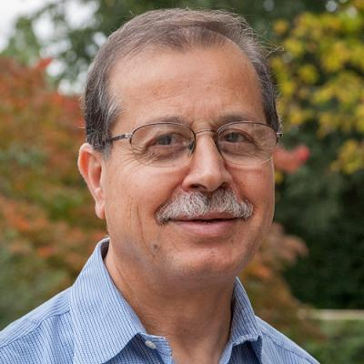

Computational Science · Numerical Analysis · Parallel Computing
Thiab R. Taha
Professor Emeritus, School of Computing, University of Georgia
Researcher, educator, academic leader, editor, and international conference organizer whose work spans nonlinear waves, scientific computing, high-performance computing, optical-fiber communication systems, and systems biology.

Academic profile
A career in scholarship, leadership, and service
Dr. Taha served as Head of the Department of Computer Science from 2013 to 2022 and as Interim Director of the School of Computing from 2022 to 2023. He played an important role in the creation of the School of Computing and helped guide a period of substantial growth in computing education at UGA.
His professional activities include leadership in IMACS, journal editorship, conference organization, university service, and international academic engagement.
Explore
Selected areas of the website
Research
Computational science, nonlinear waves, numerical methods, and parallel computing.
Leadership
Departmental growth, program creation, and establishment of the School of Computing.
Publications
Selected refereed work and a link to the complete CV.
Conferences
IMACS conferences, world congresses, and nonlinear wave meetings.
Honors
Research awards, Fulbright recognition, and professional leadership.
Service
University, professional, departmental, and accreditation activities.